May, 2016
Kronos approached our team of three (Kelsie, Nick, and I) with a problem: although timekeeping technology has gone through significant advancement over the last few decades, employees still punch in/out incorrectly. To alleviate this, Kronos wanted us to explore using gamification and user-centered design to change employee behaviors, therefore reducing the amount of time and money spent managing exceptions.
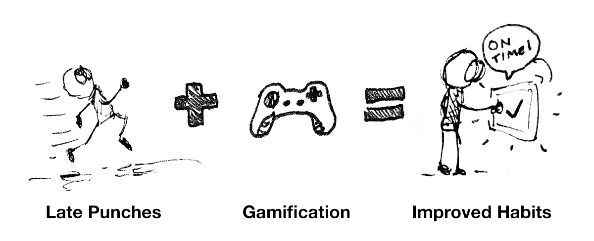Our project deliverables (summed up in a 5-minute "protocast") were well-received by our stakeholders as well as the users we interviewed. We were able to create a product that targeted a broad range of motivational factors, took no time away from current processes, and incorporated a game that was immediately understandable, yet sophisticated under the surface.
Scope: Although late and missed punches might be tied to factors other than motivation and habit, we were tasked with exploring gamification as a solution.
Gamification Knowledge: We decided to take this project on as a challenge, as none of our team members had prior knowledge in the field of gamification.
Class Constraints: Our class was focused on interaction design according to Cooper’s goal-directed design process (outlined in “About Face”), so we did not have much opportunity to explore divergent processes through design thinking excersizes. We also had to create a 3D component as a class requirement, which may not have been necessary if this was developed.
Our team of 3 had a fairly regimented process ahead of us. Our professor split the project into 4 deliverables according to Cooper’s goal-driected design process.
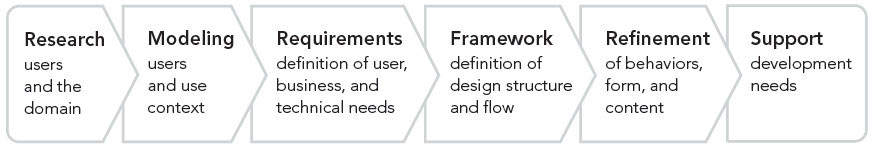Cooper's goal-directed design process
To get our bearings on gamification (as we had no prior knowledge of the field), we started by conducting some academic research on gamification. We quickly learned that gamification is a massive field, and in our final recommendations to Kronos we advised that they involve a gamification expert for any future projects of this nature.
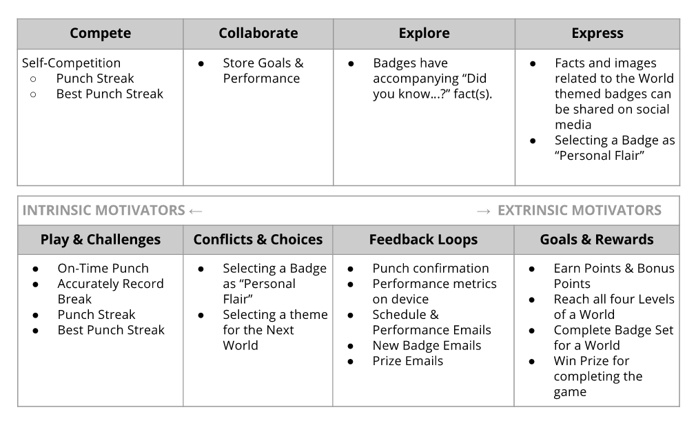Game motivators and how we aligned them with our system
Next, we looked into Kronos’ current offerings to see how a gamified product might fit into their current lineup, settling on the Kronos InTouch as a reference for our industrial design framework.
We interviewed three retail associates, keeping a narrow scope in the retail space in order to maintain a strong focus on the problem at hand. Through our discussion guide, we learned about our interviewees’ typical routines and habits, how they might remember to complete daily/weekly/monthly tasks, and their typical work routines.
After our interviews, we affinity mapped our findings as a group:
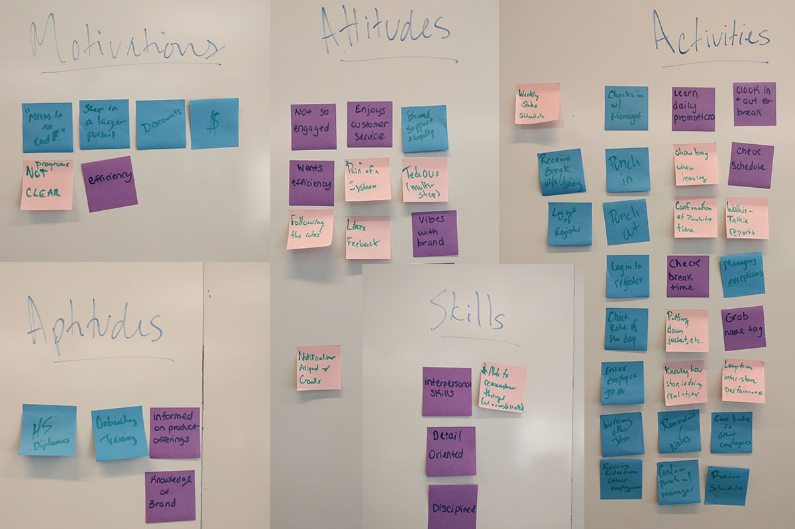Affinity mapping our interview findings
From these interviews, we developed our persona, Taylor Gray:
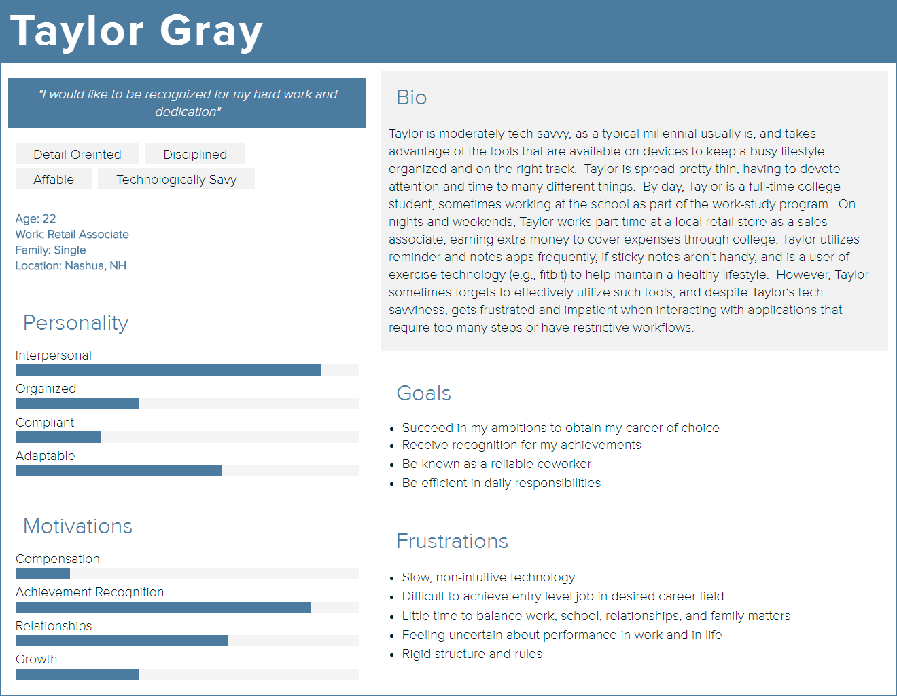Our persona that would guide future design decisions
One of our most important findings was the value that employees had in efficiency and motivators outside the workplace (pursuing the career of their choice, paying rent, etc.). Since we knew timekeeping wasn’t a priority in their life, we wanted to keep the interactions short, sweet, and to the point.
We then set to work thinking about how the game would function. We wanted to incorporate principles we learned from our research like set-completion, randomness, the paradox of choice (providing less choices when appropriate), and progressive disclosure.
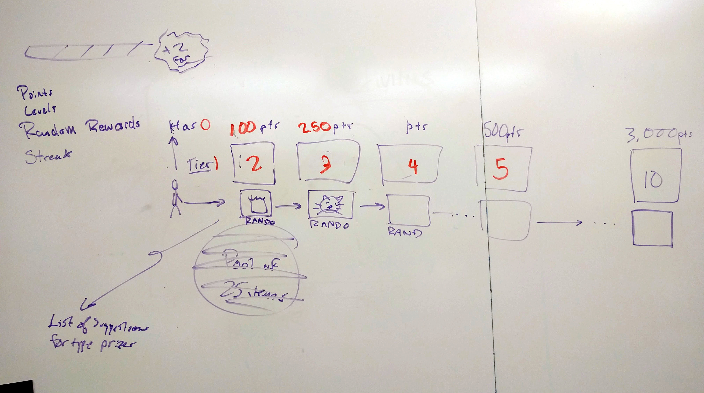Game mechanics ideation
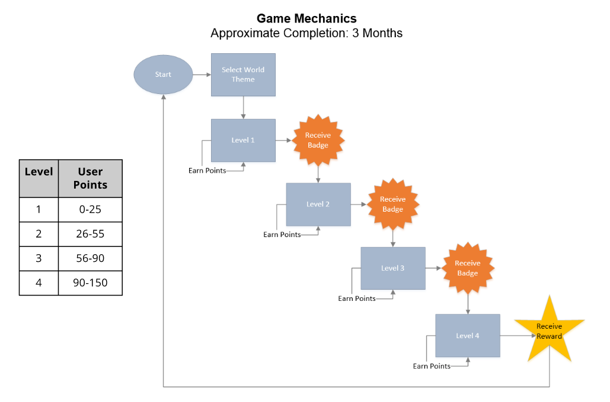Game flow diagram
Based on our user interviews, game mechanics, and user scenarios, we each created an initial paper prototype of the device’s interface. Our team then met up to compare our designs, and we took the best elements from each design in a collaborative workshop.
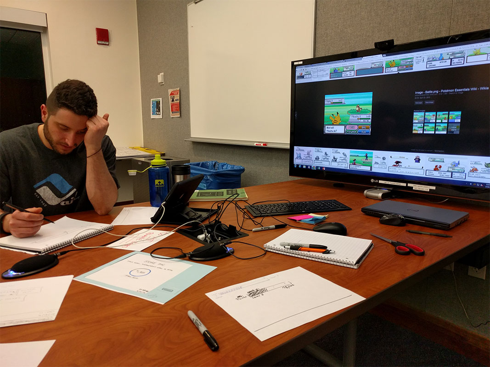Creating the paper prototype
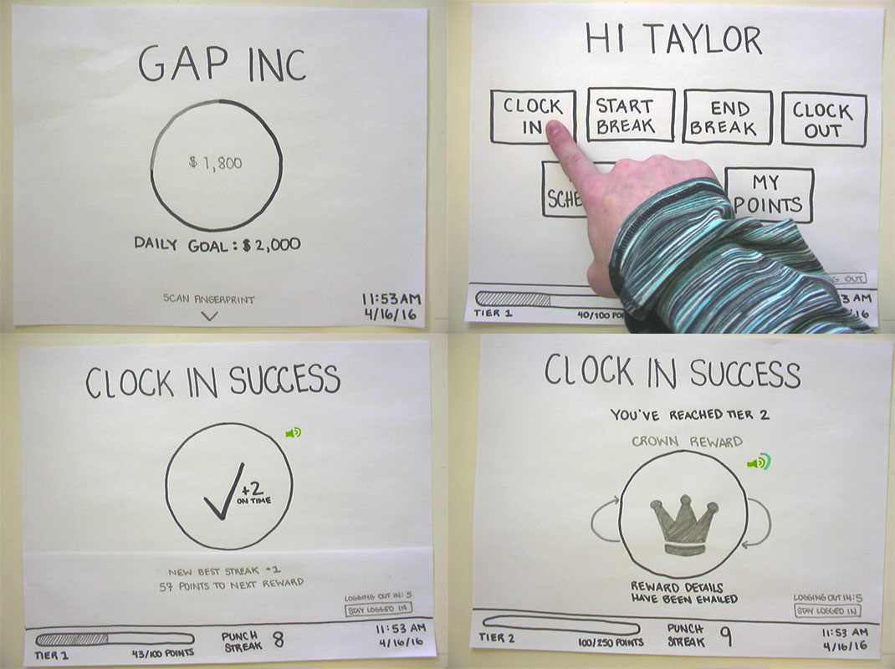Completed low-fidelity paper prototype
From this, I created an interactive prototype in Axure that would go through the scenarios we established. Another teammate created the email templates for reward notifications and progress updates.
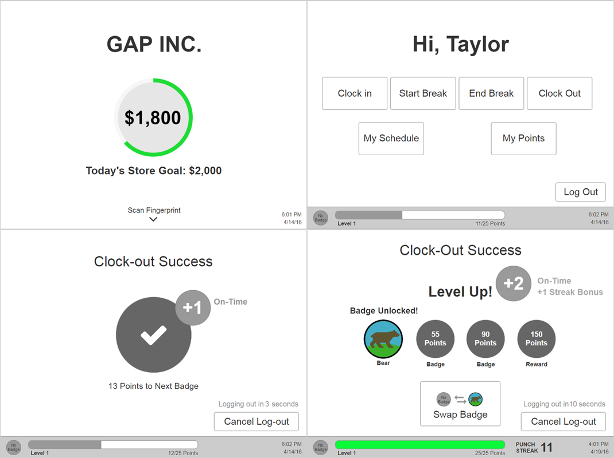Medium-fidelity interactive prototype (See the full interactive prototype here)
This class project also required a 3D prototype component. I created sketches for the initial interaction framework, then my teammates created the physical prototype.
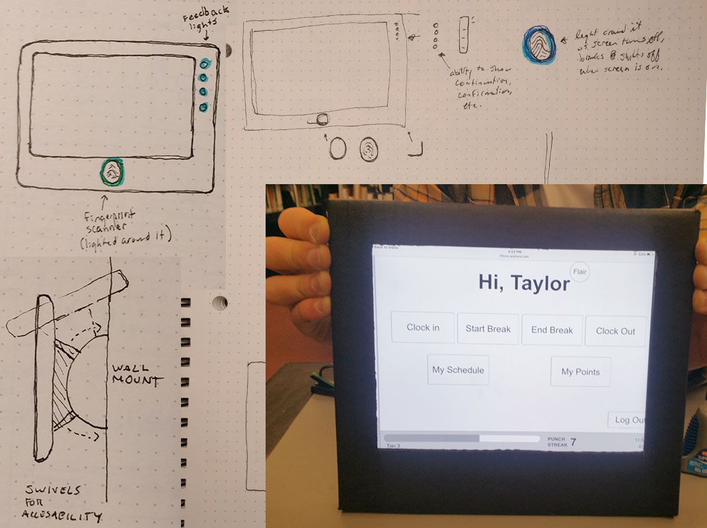My sketches and the low-fidelity physical prototype
And last but not least, we completed a quick brainstorming exercise with dot-voting to come up with "Punch Pal" as the name of our system.
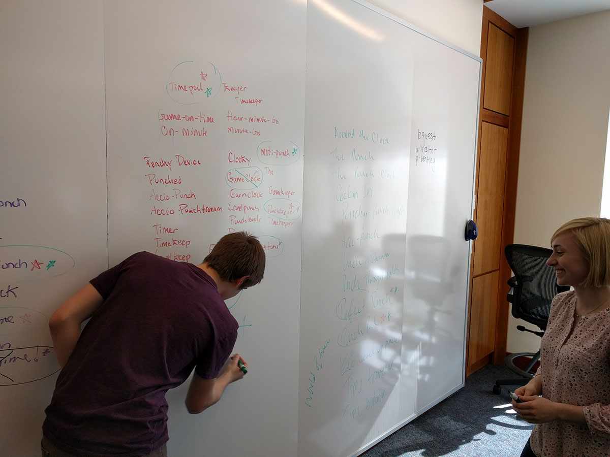Despite popularity, we did not go with "Accio Punchtronus"
Our final deliverable consisted of a design summary document, a 15-minute presentation, and a 5-minute protocast (above) shown to our class and the Kronos representative in attendance. I directed the protocast effort, while my teammates created the design summary and presentation. We received an A on our final deliverable as well as a great review from Kronos.
Focus on gamification earlier in the process by establishing a tighter scope.
Be in closer touch with the Kronos team throughout the process. The tight deliverable process made it difficult to get client reviews before submission deadlines.
Conduct user testing throughout the design process to improve interface interactions.
The final deliverable was well-received by both the professor and Kronos.
The protocast was able to show the value of the system quickly and in an engaging way.
By taking on a challenging project, we were able to learn a significant amount about the field of gamification, which we were not familiar with upon starting the project.
Home


{kind=link}
{kind=link}
{kind=link}
{kind=link}
{kind=link}
{kind=link}
{kind=link}
{kind=link}
{kind=link}
{kind=link}
{kind=link}
{kind=link}